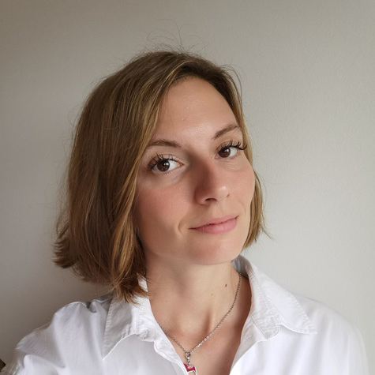

Piskarije
About
I’m a professional translator, certified court interpreter, conference interpreter, and audiovisual translator dedicated to delivering precise, culturally sensitive communication across languages. I hold an MA in Art History and English Language and Literature, as well as a specialist degree in conference translation. With a strong background in legal, technical, cultural, and business fields, I help clients bridge language gaps with accuracy and confidence. Whether you need reliable document tr...
References
I’ve had the privilege of working with diverse clients, including IYUNO, TVT, Deloitte, Zagreb Film Festival, Atelier Hrzic, Sesnic&Turkovic Design Studio, Znanje, Propeller Film, Curry Bowl, Raystar, The Archaeological Museum in Split, Mediatranslations, and many others.